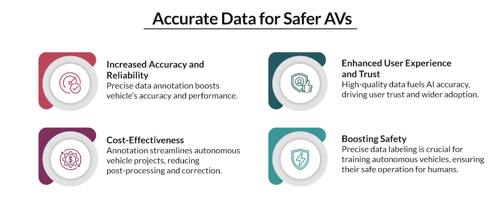

How Quality Data Annotation Services Enhance Autonomous Vehicle Performance
 By Anolytics | 12 July, 2024 in Data Annotation | 5 mins read
By Anolytics | 12 July, 2024 in Data Annotation | 5 mins read
The future of transportation, high-performing autonomous vehicles (AVs), hinges on meticulously annotated data that trains AV systems to "see" and understand the complexities of the real world. The Allied Market Research report stated that the global market for autonomous vehicles will cross $556.67 billion by 2026. It highlights the growing importance of high-quality data annotation services.
Data annotation is critical for developing AI in autonomous vehicles. It enables self-driving cars to perceive and interpret their surroundings accurately. The precision of annotated data enhances these vehicles' performance and safety.
It ensures accurate detection of objects, obstacles, and road conditions. High-quality data annotation transforms raw data into meaningful information. It helps autonomous vehicles make confident real-time decisions.
Let’s explore the role of Data annotation in enhancing AV performance for reliable, efficient autonomous driving solutions.
The Role of Data Annotation in Autonomous Vehicle Performance
High-quality data annotation transforms raw data into labeled datasets that machine learning models can use to learn and improve. This annotated data enhances various functions in AV systems such as object detection and classification, lane and road sign recognition, pedestrian and obstacle detection, and environmental perception and context understanding.
Object Detection and Classification
For an autonomous vehicle to navigate safely, it must accurately identify and classify objects in its surroundings. Training AV algorithms on annotated datasets enables these vehicles to detect and classify objects with high precision. It helps make informed driving decisions, avoid collisions, and ensure the safety of passengers and pedestrians.
Lane and Road Sign Recognition
Annotated data helps identify lane markings and road signs during varying weather, lighting, and poor road quality. Annotated images and videos train the AVs to recognize lanes and signs accurately. It also helps them keep lane, change lanes, and adhere to speed limits and traffic signals.
Pedestrian and Obstacle Detection
Annotated data enables AV systems to distinguish between moving and stationary objects, predict pedestrian behavior, and react accordingly. This involves labeling various pedestrian poses, movements, and locations relative to the vehicle.
Environmental Perception and Context Understanding
It enables the AVs to interpret road conditions, identify potential hazards, and comprehend the behavior of other road users. Training the AV models on annotated datasets enables them to develop a comprehensive understanding of their surroundings and make more accurate and reliable driving decisions.
Data Annotation Methods in Autonomous Vehicles
Autonomous vehicles (AVs) rely on a sixth sense – not magic but meticulously labeled data. This data annotation breathes life into sensor information, allowing AVs to navigate the complexities of the road.
Here's a glimpse into some key methods:
LiDAR and Radar Annotation
Human experts label points in the 3D point cloud data, identifying objects like vehicles, pedestrians, and obstacles. This enables AVs to perceive their surroundings accurately, especially in low-light conditions or challenging weather where cameras struggle.
Semantic Segmentation & Instance Segmentation
Semantic segmentation meticulously labels every pixel in an image. It identifies the road, sidewalk, vehicle, pedestrian, or other relevant elements. This detailed breakdown allows AVs to understand the entire scene. Instance segmentation builds on this by identifying each object within a class, allowing AVs to track specific cars or pedestrians.
Sensor Fusion Annotation
It creates a unified dataset that provides a holistic view of the environment. By considering information from all its senses, an AV can better understand complex scenes and make more reliable decisions.
Bounding Boxes
Imagine drawing a box around a car or pedestrian in an image. This is a bounding box, a common method for object detection. It teaches AVs to identify and locate various objects on the road.
3D Cuboids
The real world is three-dimensional, and AVs must perceive it that way. 3D cuboids provide depth information by labeling objects with width, height, and length. This helps AVs accurately judge distances and navigate in complex environments.
Benefits of High-Quality Data Annotation in Autonomous Vehicles
High-quality data annotation is a cornerstone in developing and performing autonomous vehicles (AVs). It transforms raw data into structured, labeled datasets, enabling machine learning models to accurately interpret and respond to their environment. Here are the key benefits of high-quality data annotation for AVs:

● Enhanced Object Recognition: High-quality annotation makes the AVs capable of identifying and classifying objects on the road, such as cars, pedestrians, bicycles, and traffic cones. The AVs can then react appropriately, avoiding collisions and ensuring a smooth driving experience.
● Superior Situational Awareness: The AVs gain a deeper understanding of their surroundings, such as road signs, lane markings, and weather conditions. This helps them make informed decisions, such as obeying traffic rules and adjusting speed for slippery roads.
● Improved Decision-Making in Critical Situations: AVs encounter unexpected situations. High-quality data annotation plays a vital role here. By labeling data for rare events like sudden pedestrian movements or adverse weather, AVs can be trained to react appropriately, minimizing potential risks.
● Adaptability to Diverse Environments: The world throws various driving scenarios at AVs. High-quality data annotation prepares them for this diversity. Using data from various locations, weather conditions, and lighting situations, AVs can adapt their behavior and confidently navigate any road.
● Increased Safety and Reliability: The goal is ultimately safe and reliable autonomous vehicles. High-quality data annotation paves the way for this future. Precise object recognition, superior situational awareness, and the ability to handle unexpected situations all contribute to safer roads for everyone.
Choosing the Right Data Annotation Partner for Autonomous Vehicles
Selecting the right data annotation partner for autonomous vehicles is crucial for the success of your self-driving car projects. Accurate and high-quality data annotation ensures that machine learning models can accurately perceive and navigate their environment.
First, select a provider with prior experience in the automotive industry, equipped to handle large datasets efficiently. Furthermore, they should employ a well-trained team of annotators and have the necessary technological infrastructure to meet your project needs.
Second, evaluate the quality assurance measures in place. Ensure the partner has robust QA processes, including multiple rounds of review and validation by experienced annotators and AI-driven checks. This helps minimize errors and maintain consistency across large datasets.
Your partner must also adhere to stringent security measures to protect your data from breaches or unauthorized access.
Lastly, look for a partner who offers flexibility and customization, can adapt to your changing requirements, and offers tailored solutions.
The Future of Data Annotation for Autonomous Vehicles
The future of data annotation is poised to significantly drive the advancement of autonomous vehicle (AV) technology. Key trends and innovations are set to reshape the industry, enhancing the efficiency and effectiveness of AV systems.
Increased Automation: Automation is revolutionizing data annotation, allowing the processing of vast amounts of data quickly. This ensures AV models can access diverse, up-to-date training datasets, accelerating the development cycle.
Enhanced Quality Control: Advanced quality control mechanisms, such as consensus-based annotation and real-time error detection, will ensure high annotation quality. These measures will reduce errors in AV systems, enhancing reliability.
Collaborative Annotation Platforms: Future platforms will facilitate real-time collaboration among annotators, AV developers, and AI researchers. This will improve annotation quality and foster a cohesive data annotation ecosystem.
Ethical and Privacy Considerations: As annotation becomes more sophisticated, robust privacy measures will be necessary to protect sensitive information captured in real-world environments. Anonymization and secure data handling practices will be crucial.
Integration with Simulation Environments: Combining real-world annotated data with simulated data will create comprehensive training datasets. This will help AV systems learn and adapt to new situations more effectively.
Continuous Learning and Adaptation: Future annotation processes will involve ongoing updates to datasets, ensuring AV models remain accurate and relevant as new data emerges. This continuous learning approach is essential for maintaining AVs' performance and reliability.
Conclusion
High-quality data annotation plays a critical role in developing reliable autonomous vehicles. Precisely labeled data allows AV systems to effectively perceive their surroundings, navigate various environments, and make safe choices. Advancements in data annotation techniques promise even more capable self-driving vehicles for the future.
At Anolytics, we understand data annotation's critical role in AI success. We offer a comprehensive suite of data annotation solutions, leveraging a global network of skilled annotators and cutting-edge technologies. Our team possesses expertise across various industries and data types, allowing us to tailor our approach to your needs.
please contact our expert.
Talk to an Expert →
You might be interested

- Data Annotation 02 Aug, 2019
Five Reasons to Outsource Your Data Annotation Project
Artificial Intelligence (AI) and Machine Learning (ML) development is mainly rely on training data sets, that helps the
Read More →
- Data Annotation 17 Dec, 2019
Why Data Annotation is Important for Machine Learning and AI?
Data annotation is the process of making the contents available in various formats like text, videos and images, recogni
Read More →
- Data Annotation 13 Oct, 2020
Top Most Data Labeling Challenges in Annotation Companies
Data labeling is not a task, it requires lots of skills, knowledge and lots of effort to label the data for machine lear
Read More →